El Sistema MSR-CMT
JADiCC 2026, ha seleccionado el sistema de gestión de conferencias “Microsoft Research Conference Management Toolkit (MSR-CMT)” (https://cmt3.research.microsoft.com/About ), donde se ha configurado el sitio JADICC2026 para dicho uso. Deberá notarse, no obstante, que dicho sistema sólo gestionará el ciclo de vida de los envíos. Los demás aspectos de la conferencia (por ejemplo, la inscripción) se harán en otros sistemas en línea. En todos los casos, este sitio (es decir, donde usted lee en este momento estas líneas) tendrá la información actualizada de todos los aspectos de la conferencia.
El sistema gestor de conferencias CMT tiene grandes semejanzas con sus contrapartes (Easychair, EDAS, etc.), y usted podría usarlo por primera vez sin problemas. No obstante ello, hemos preparado un instructivo para utilizarlo con nuestra conferencia. A continuación damos los pasos a seguir para enviar un trabajo por medio del sistema CMT.
REGISTRACIÓN DE USUARIO
Ingrese en https://cmt3.research.microsoft.com/jadicc2024.
El sistema CMT deberá mostrar la pantalla de ingreso de credenciales. Asegúrese que se identifique el congreso correctamente, con su denominación de “Jornadas Argentinas de Didáctica de las Ciencias de la Computación“:
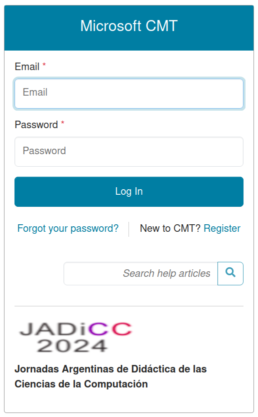
Por favor siga los pasos siguientes, dependiendo si usted ya está registrado, o si es un usuario nuevo.
Si su email ya está registrado en CMT..
Ingrese sus credenciales y haga clic en Log In. Pasará al selector de conferencias, por favor lea la sección más abajo, sobre la Selección de la Conferencia.
Si usted es un usuario nuevo..
Haga clic en el vínculo Register para darse de alta en el registro del sistema CMT. Al hacerlo, ingresará en la página de alta de usuario (Fig. 2). Allí deberá especificar el email que lo identificará unívocamente como usuario en el sistema CMT. Este ID servirá no sólo para el JADiCC 2024, sino también para cualquier otro evento en este sistema CMT.
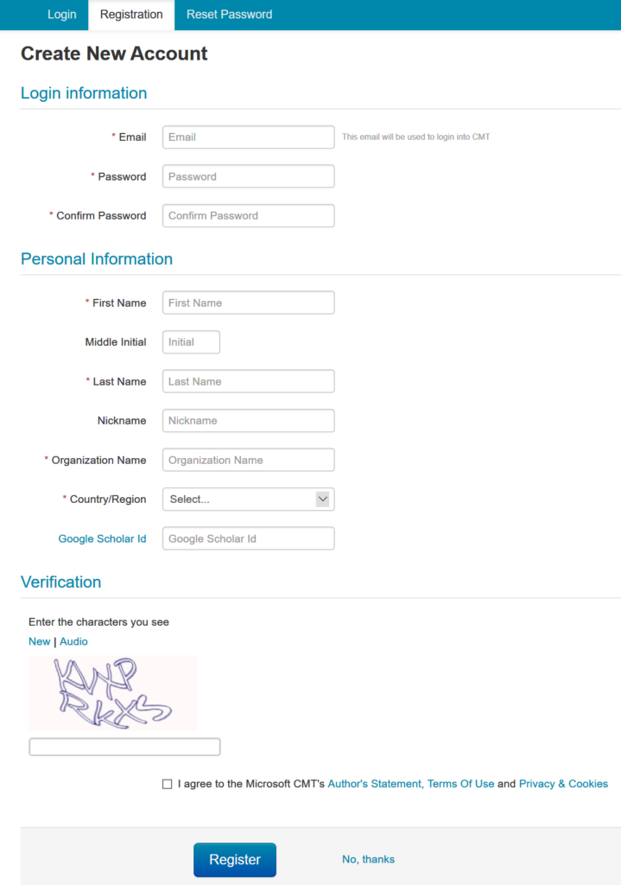
Haga clic en Register. El sistema le mostrará una ventana donde le informa que se ha enviado un email para la verificación de la casilla de correo que usted especificó.
En breves instantes más, usted recibirá en la casilla de correo, que haya especificado, un mensaje de confirmación (Fig. 3), donde deberá hacer clic en el vínculo principal del mismo para confirmar su casilla de correo. Este paso es esencial para activar su cuenta.
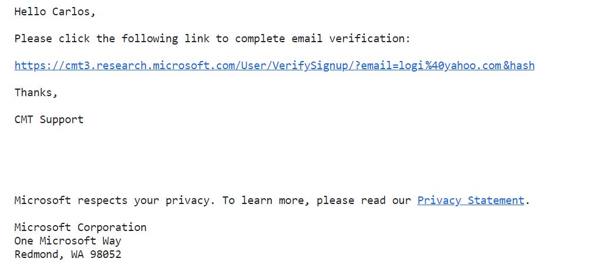
Al confirmar su email, se mostrará una página con el mensaje de activación de su cuenta (Fig. 4).
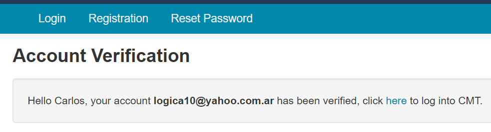
Luego, para ingresar al sistema CMT, haga clic en here, como se le indica.
Verificación de email existente
Si el email especificado ya existe, CMT lo informará inmediatamente (Fig. 5), y no dejará enviar el formulario de alta. En tal caso, si no recuerda la contraseña, deberá hacer clic en la solapa Reset Password a fin de recuperar su contraseña, deberá especificar el mismo email indicado como “ya en uso”, y allí recibirá su nueva contraseña.
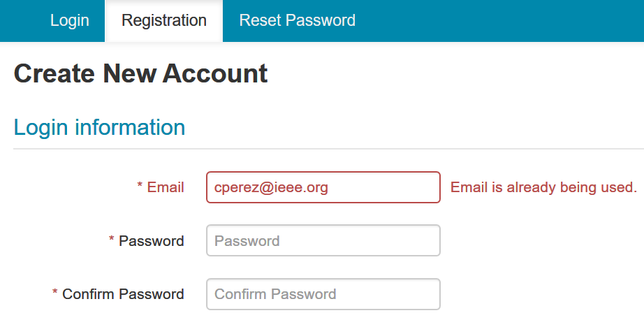
Una vez que tenga las credenciales, deberá ingresar al sistema en la página antes indicada, https://cmt3.research.microsoft.com/ARGENCON2020.
Si su ingreso es exitoso, se le proporcionará acceso al selector de conferencias (ver a continuación).
SELECCIÓN DE LA CONFERENCIA
Si usted recién ha creado su cuenta y la lista de conferencias está vacía..
Una vez que haya proporcionado las credenciales correctas, el sistema mostrará el selector de conferencias. Si éste se encuentra vacío (Fig. 6), es porque el email recién registrado no se encuentra aún asociado a ninguna conferencia.
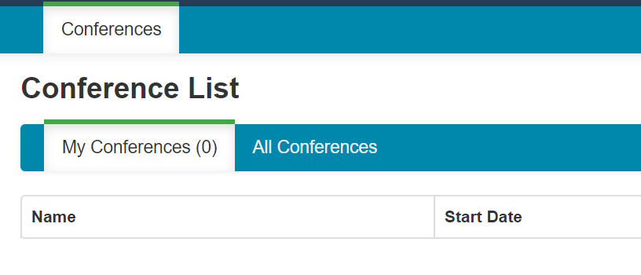
En este caso, haga clic en la solapa All Conferences, para acceder a la lista de todas las conferencias registradas en CMT. Se mostrarán, naturalmente, las que estén con fecha de inicio igual o superior a la fecha actual (Fig. 7). En este momento, no haga clic en ningún nombre de conferencia, sino que debe proceder a localizar la entrada de la tabla que corresponde al congreso JADiCC 2024.
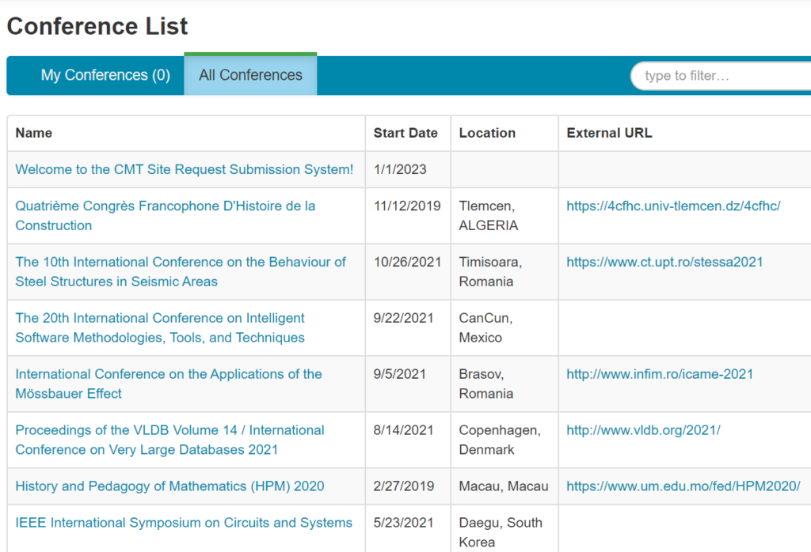
En el cuadro de texto de filtrado (“type to filter“), escriba la palabra jadiccy espere unos instantes, hasta que se muestre la conferencia Jornadas Argentinas de Didáctica de las Ciencias de la Computación (Fig. 8). Verifique la fecha de inicio del evento (10/24/2024) para asegurarse que se asociará al congreso correcto. Luego haga clic en el vínculo Jornadas Argentinas de Didáctica de las Ciencias de la Computación. Tenga en cuenta que las fechas se muestran en formato mm/dd/aaaa.
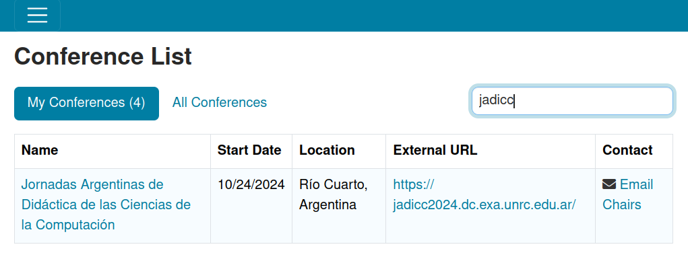
Al hacer clic en Jornadas Argentinas de Didáctica de las Ciencias de la Computación , ocurrirán estas acciones:
- Se asociará temporalmente su usuario en JADiCC 2024 con rol de autor.
- Con el rol de autor, se le redirigirá inmediatamente a la pantalla de carga de documentos de artículos, donde tendrá la oportunidad de enviar su trabajo.
- Si usted no envía su trabajo, y cierra la sesión y/o navegador, la próxima vez que ingrese al sistema CMT quizá deba repetir el proceso de selección de conferencias.
NOTA: si usted, por error, selecciona otra conferencia, esto no significa necesariamente un problema. Su email es único en todo el sistema, y la asociación del mismo a conferencias no tiene un límite predefinido. Además, sólo se efectiviza la asociación si usted sube al menos un (1) documento. Por lo tanto, en este caso, no suba ningún documento, y vuelva a hacer el proceso de búsqueda de conferencias, esta vez seleccionando correctamente el JADiCC 2024.
CONSOLA DEL AUTOR
Una vez en la consola del autor, usted verá la lista de trabajos enviados. Si ingresa por primera vez, verá dicha lista vacía (Fig. 9):
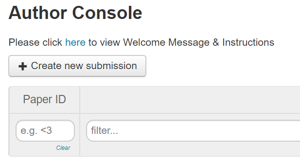
Si ya ha enviado documentos, los verá en una lista, ordenados por el número de identificación del envío que ha generado el sistema. (Fig. 10).
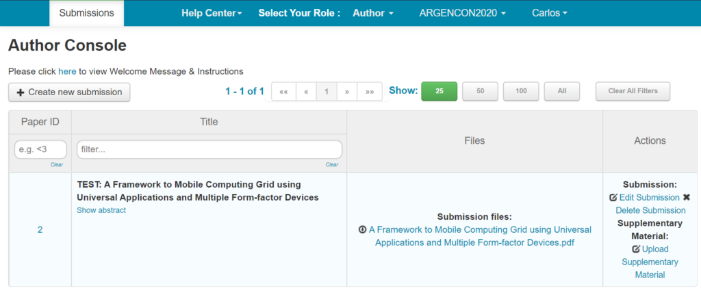
Ya sea que tenga trabajos subidos al sistema o no, usted podrá hacer clic en Create New Submission para enviar otro trabajo. El sistema no controla el número de archivos enviados por cada usuario.
IMPORTANTE: si el botón Create New Submission no está visible, es porque, para ese día, el envío no está habilitado.
ENVIAR UN DOCUMENTO
Si el envío de trabajos está activo, el botón Create New Submission aparece visible en la consola del autor, entonces, haga clic sobre él para iniciar el proceso de envío y seleccione el Track.
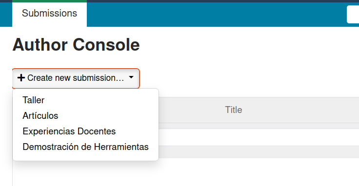
Aguarde unos instantes, el sistema generará el formulario de carga de documentos. Una vez que dicha página sea visible, proceda a rellenar el formulario de la siguiente manera:
Título y resumen
Especifique el título del trabajo, y su resumen o abstract (Fig. 11). Esta conferencia no tiene envío previo de resúmenes, no obstante, debe colocar exactamente el mismo resumen que el que figura en su artículo, para facilitar la tarea de revisión, al evaluar el encuadre temático del artículo.
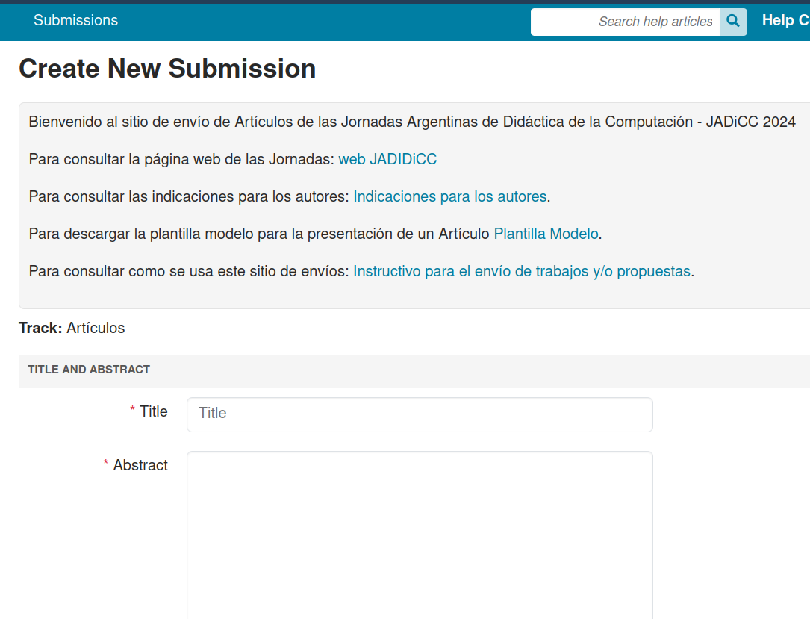
Luego, debe indicar los autores. El sistema colocará como autor principal al usuario actual del sistema (Fig. 12)
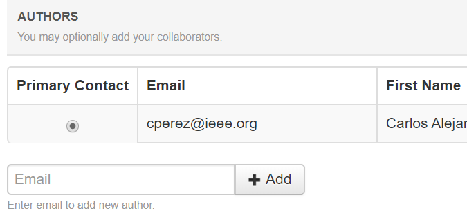
No obstante, podrá agregar un número indefinido de autores indicando el email del coautor, y luego haciendo clic en el botón +Add .
Si el email no existe en el sistema CMT, el sistema habilitará cuatro campos adicionales para que usted especifique el nombre y apellido del nuevo coautor, su organización o filiación, y el país al que pertenece (Fig. 13). Para agregarlo efectivamente a la lista de autores, haga clic en el botón azul +Add..
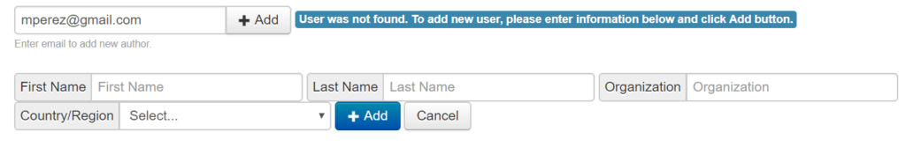
Subir el archivo al formulario
Luego deberá subir el documento PDF que contiene el artículo propiamente dicho. Para ello puede arrastrar y soltar el archivo en cuestión, o bien hacer clic en el botón Upload from Computer ,para seleccionar el documento deseado (Fig. 16), con un tamaño máximo de 10 MiB.
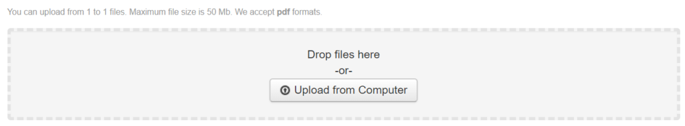
Respecto del archivo a ser enviado, tenga en cuenta estos puntos:
- El nombre del archivo deberá coincidir con el título del trabajo que figura dentro del artículo PDF.
- El formato del documento debe descargarse desde https://jadicc2024.dc.exa.unrc.edu.ar/call.html#section-modalidades.
Finalmente, envíe su trabajo
Haga clic en el botón Submit para enviar efectivamente su trabajo. El sistema demorará unos segundos, y le mostrará una pantalla de resumen sumario de su envío, verifique que todo esté correcto.
Si existe algún error u omisión, haga clic en el botón de Edit Submission, en esa misma página.
Si está correcto, haga clic en el botón Go to Author Console, donde verá el envío que acaba de hacer (Fig. 18). Tenga en cuenta que las fechas se muestran en formato mm/dd/aaaa.
IMPORTANTE: Al enviar efectivamente un trabajo, el sistema asocia sus credenciales a la conferencia JADiCC 2024: la próxima vez que ingrese al sistema debería ver nuestra conferencia listada en la página, en la ficha My Conferences.
CÓMO EDITAR SU ENVÍO
Como se ha indicado, una vez que usted ha enviado el documento, éste aparecerá en la consola del autor:
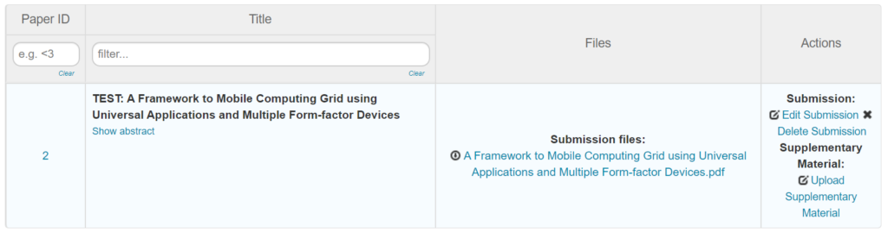
Aquí, las acciones posibles son:
Show Abstract: visualizará en una ventana emergente del navegador el contenido del abstract. No podrá editarlo aquí.
Submission files: Haga clic sobre el vínculo para descargar una copia del PDF de su artículo.
Edit Submission: permite editar su envío, siempre y cuando la ventana de fechas de envío esté aún abierta. Allí podrá cambiar todo lo relacionado a su artículo (título, resumen, autores, enviar otra versión del PDF, cambiar los temas primario y secundarios, etc.)
Delete Submission: elimina del sistema CMT su envío. No podrá eliminar su trabajo una vez operado el deadline.